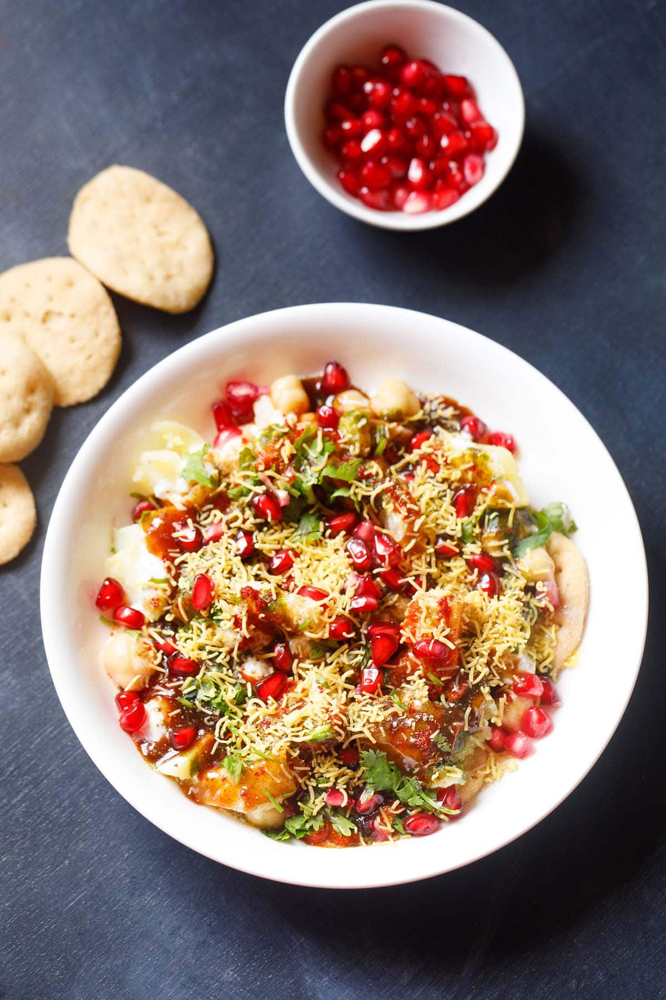

CHAAT

INGREDIENTS
- 2 cups boiled potatoes, cubed
- 1 cup boiled chickpeas
- 1/2 cup chopped onions
- 1/2 cup chopped tomatoes
- 1/4 cup chopped coriander leaves
- 1/4 cup tamarind chutney
- 1/4 cup mint chutney
- 1/2 cup sev (thin crispy noodles)
- Salt to taste
- Red chili powder to taste
- Chaat masala to taste
- 1 lemon, cut into wedges
INSTRUCTIONS
- In a large mixing bowl, add boiled potatoes, boiled chickpeas, chopped onions, chopped tomatoes, and chopped coriander leaves.
- Sprinkle salt, red chili powder, and chaat masala to taste. Mix everything well.
- Drizzle tamarind chutney and mint chutney over the mixture. Mix well.
- Transfer the chaat to serving bowls and garnish with sev on top.
- Squeeze lemon wedges over the chaat before serving.
- Enjoy the delicious Indian chaat!